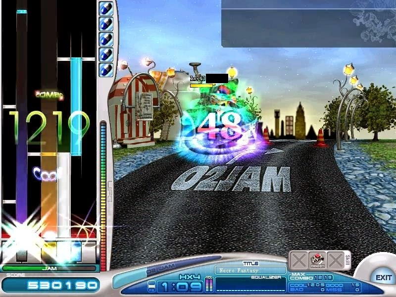
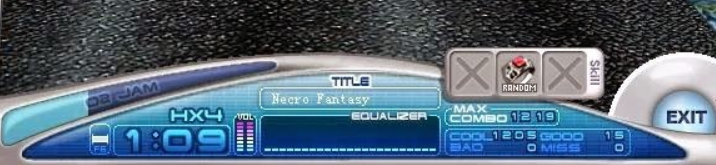
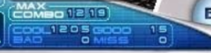
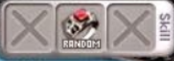
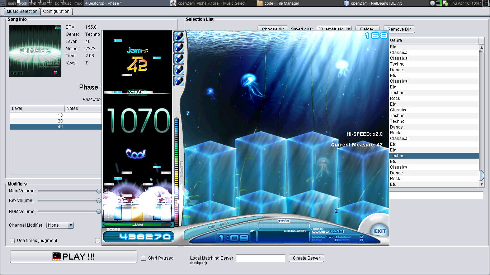

About O2JAM
O2Jam is an online rhythm video game for desktop computers, developed in South Korea by O2Media. The earliest release of an O2Jam server on record is dated to February 21, 2005 ( source: Wikipedia.) I just wanted to point out that it’s a decently old VSRG and it is still being played by a handful of players today.
O2Jam is an example of a game in the VSRG (Vertical Scrolling Rhythm Game) genre. It is a rhythm game where you have to hit the notes falling down (or up), which will appear according to the music, as with every other rhythm game. Think of Guitar Hero or Dance Dance Revolution. Every note corresponds to a music, so as you hit the notes, the actual music notes will also be played!
O2Jam is a 7k game, and mostly focused on Long Notes. A 7k VSRG would mean that there are 7 columns where the notes would fall down.
An example O2Jam Gameplay
In the playfield, you have the big Combo Meter in the middle, and the judgement just below it. On the right of the playfield are the pills (which helps O2Jam players continue their combo) and the HP gauge. There is the Jam gauge, which is a big influence to the score just below it.
Online O2Jam provides a good multiplayer environment. It is a good place to socialize with other Rhythm Gamers too. You can compete with up to 8 players simultaneously, each games as intense as the song provides.
O2Jam is known to have a very lenient Judgement, which determines how accurate you have hit the note. Compared to other Rhythm Games / VSRG’s such as Lunatic Rave 2 (LR2) or IIDX, what is defined as a full accuracy play in O2Jam might only translate as 75% accuracy in those games.
Since O2Jam is an old game, expect an old-style interface. You can’t play O2Jam on window mode without doing some nasty trick, but there is O2Mania which is an O2Jam emulator.
If you would like to play and compete with others in real-time (and prefer long notes, which are amazing), I would recommend you to play this game.
Note that I said in the beginning, every note corresponds to a musical note. That is true for official songs.
At higher level gameplay, the notes does not correspond to a musical note most of the time. This is because most of the high level songs are created by other players, who have no time to actually compose the music for O2jam
If you want to play songs that all have corresponding musical note per key, then there is another VSRG called Lunatic Rave 2, which is a Beatmania Simulator (BMS) for the PC.
Alright! I’m done with the necessary explanation, and that’s good and all, but how do you play this? Where can you get this? How do you start playing?
Since the official servers are down, you won’t be able to play it unless you go for private servers, a server emulator (o2Emu), or o2mania.
O2jam Gameplay
1.Playfield
On the left side is where you will be mostly focusing on. Displayed there are the following:
Combo Count - Your current combo. It says “1219” on the image.
Judgement – The accuracy of the note you just hit. It says “Cool” on the
image.
Jam Combo Count – The current Jam combo. It is
not shown on the image.
HP Gauge – Your current HP. Every Miss and
Bad will drain your HP. Losing HP would
kill you (turning your avatar into a jelly-like creature), and instantly end the game (if you are
playing solo).
Pills - These helps the player from breaking a combo. Check under the Judgement section
for more info.
Jam Meter - This is where most of your score comes from. Check under the
Judgement section for more info.
Score – Your current score in the game. It says “530190” on the image.
2.Info Panel
Title – Title of the current song. It says “Necro Fantasy” on the image.
Equalizer - This is mostly for visual appeal only.
Volume – Volume of your O2Jam.
Skill – These shows the current Skill Rings being
used in the game. The person is using the “Random” Skill ring in the image.
Judgement and Combo Panel – Every note hit is recorded here.
Current Song Time - Tells you how long the song has been playing. It says
“1:09″ on the image.
Song Duration – Tells you how far are you in the song. On the image, It
shows as a bar with the “o2jam”” on it.
Difficulty and Speed – This shows you what song difficulty you’re
currently playing, and the Scroll Speed. It says “HX4″, which stands for “Hard” diff and “X4″
Scroll speed.
Take note that Scroll Speed only controls how fast the note goes down in the playfield, and not how fast the music goes.
3. Judgement
Moving on with the rest of the info on the panel, there’s the game score on the right which displays your “Max Combo achieved, and the four judgements which tells you how accurate you have hit the notes. Everytime you hit a note, your Jam Meter slowly gets filled. Hitting an accuracy will fill up the Jam Meter faster.
Jam Meter needs 25 Cools or 50 Goods to be filled. Every time you fill a Jam Meter, your score increases. The higher the Jam Count, the higher the score increases. A Miss or a Bad will deplete your Jam Meter and break your Jam Combo.
Cool – This means you hit the note accurately.
Good – Not so accurate as Cool.
Miss – Literally, the missed notes — the notes you were not able to hit.
Getting a miss will drain your hp by a certain amount, depending on the song difficulty.
Bad – Now this is a special judgement. Getting a Bad means that you
technically hit the note, but it was not on time. This drains far more hp than getting a miss. This
makes the player to think twice before hitting
randomly on songs that they can’t play. Thankfully, there are some way to turn Bads to Cool.

The Pills - These could save your life in O2jam (literally!) by transforming Bads to Cools, at the cost of 1 pill per bad. You can only have a maximum of 5 pills at a time, and you don’t get to choose when to use it, so it still doesn’t exempt players from mashing their keys. Throughout the song, you will regenerate pills by hitting 25 cools in a row, so you don’t have to worry about when to panic or not when notes suddenly come pouring down.
4. Skill Rings
These so called “Skills” will allow you to change the way you play the game. On this specific picture, I am using a “Random ring” skill which randomizes the note pattern in the song. There are more Skill Rings available, and you can put at most 2 Skill Rings of different type.
O2jam’s Offline Emulator’s
Open2jam/O2mania X
Best o2jam emu. maked on java.
Open2jam(Windows/Mac) ~ 12.9 MBO2mania

First Open2jam version, does note have much difrence
O2Mania(Windows/Mac/Linux ~ 7.93 MBO2jam’s Public Private Servers
O2VJam V3

International public O2Jam server. All the registration and set-up is in English.
WebsiteO2jam Interval

Also an international public O2jam server.
WebsiteO2Jam Live

Public O2Jam server, the website might seem it’s under construction but you can still register and download songs. Everything is in English.
Website